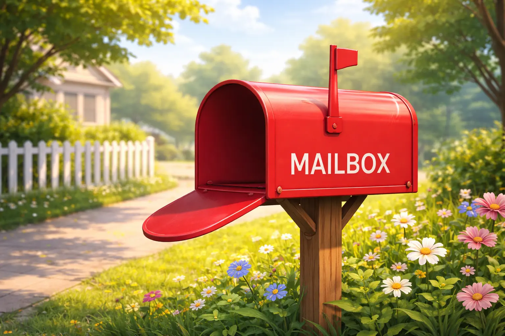
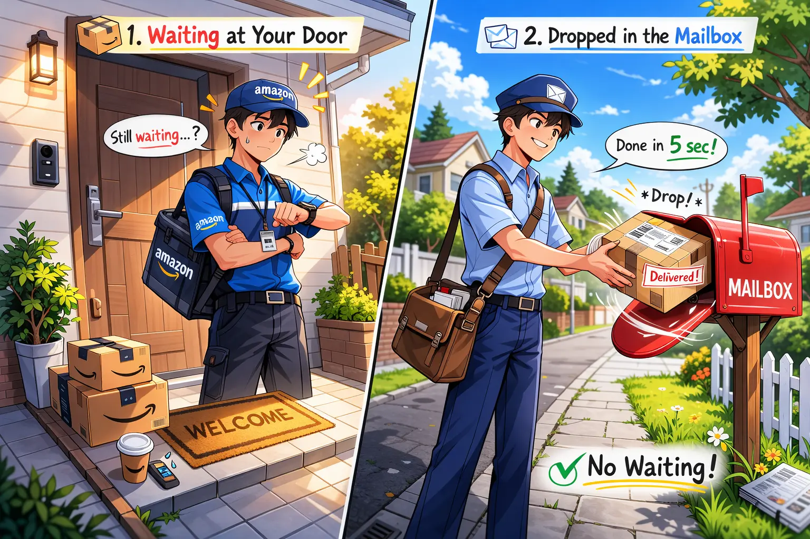

Distributed Systems · Kafka · 8 min read
Kafka Explained: Apache not Franz
A beginner-friendly guide to message queues, Kafka architecture, and how modern systems move massive amounts of data reliably.

Part 1 — Beginner: Understanding the Basics
The Problem: Systems Need to Talk
Modern software systems rarely live alone. A typical application might have:- API servers
- payment services
- notification systems
- analytics pipelines
- databases
User places order
↓
Payment service processes payment
↓
Inventory service updates stock
↓
Notification service sends email
↓
Analytics pipeline records event
This is where message queues enter the story.
What Is a Message Queue?
A message queue is simply a system where:- one application sends messages
- another application processes them later
Service A → API → Service B
Service A → Queue → Service B

Popular Message Queues Used in Industry
Different companies use different systems depending on scale.- RabbitMQ — classic message broker
- Apache Kafka — distributed streaming platform
- Amazon SQS — managed cloud queue
- Google Pub/Sub — cloud event streaming
- NATS — lightweight messaging system
Kafka became popular because it handles extremely large data streams efficiently.
Queue vs API Communication
Understanding this difference is important. API communication is synchronous .
Service A → API request → Service B
(wait)
Service B responds
Queue communication is asynchronous.
Service A → message queue
Service B → processes message later
- services are loosely coupled
- systems can scale independently
- temporary failures do not break the pipeline
What Is Kafka?
Kafka is a distributed event streaming platform.
That sounds complicated, but the idea is simple. Kafka is designed to:- accept messages from producers
- store them reliably
- deliver them to consumers
Kafka became popular because it handles extremely large data streams efficiently.
Companies using Kafka:- Netflix
- Uber
- Spotify
- Airbnb
- user clicks
- orders
- payments
- logs
- sensor readings
The Kafka Cluster
Kafka runs on multiple machines. This group is called a Kafka cluster. Each server inside the cluster is called a broker.
Kafka Cluster
Broker 1
Broker 2
Broker 3
- higher throughput
- fault tolerance
- horizontal scalability
Topics: Categories of Data
Messages in Kafka are stored inside topics.A topic is simply a category of events.
Example topics:- orders
- payments
- user-signups
- click-events
- logs
Partitions: The Key to Kafka's Scalability
Each topic is divided into partitions. Partitions allow multiple consumers to process messages in parallel.
Example:
Topic: orders
Partition 0
Partition 1
Partition 2
Partition 3
- parallel processing
- horizontal scalability
- high throughput
Ordering is guaranteed only within a partition.
Producers
Producers send messages into Kafka. Example producer code conceptually:
producer.send(topic="orders",
key="order123",
value="itemA, quantity=2")
The key helps determine which partition the message goes to.
Kafka uses:
partition = hash(key) % number_of_partitions
Consumers
Consumers read messages from Kafka. Consumers poll Kafka instead of receiving pushed messages.
consumer.poll()
Consumer Groups
Consumers often work in teams.A consumer group is a set of consumers sharing the work.
Say there is a topic about orders placed on a ecommere website. There are two teams that need this data. Team 1 needs it for analytics and Team 2 needs it for fraud detection. Each team forms a consumer group. This ensures that each group can read the same data independently without interfering with each other.
Example 1: Topic has 6 partitions. Consumer group A has 3 consumers.
Consumer A → P0, P1
Consumer B → P2, P3
Consumer C → P4, P5
Consumer A → P0
Consumer B → P1
Consumer C → P2
Consumer D → P3
Consumer E → P4
Consumer F → P5
Consumer G → Standby (no partition assigned)
- each partition assigned to only one consumer per group.
- multiple groups can read same topic independently
- analytics-service
- fraud-detection-service
- warehouse-service